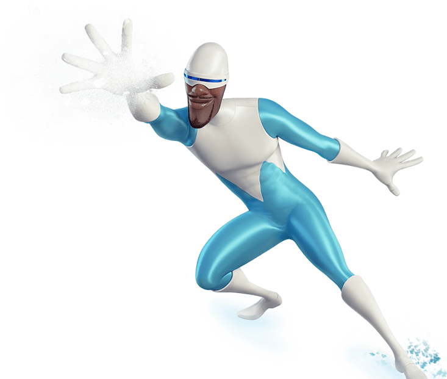
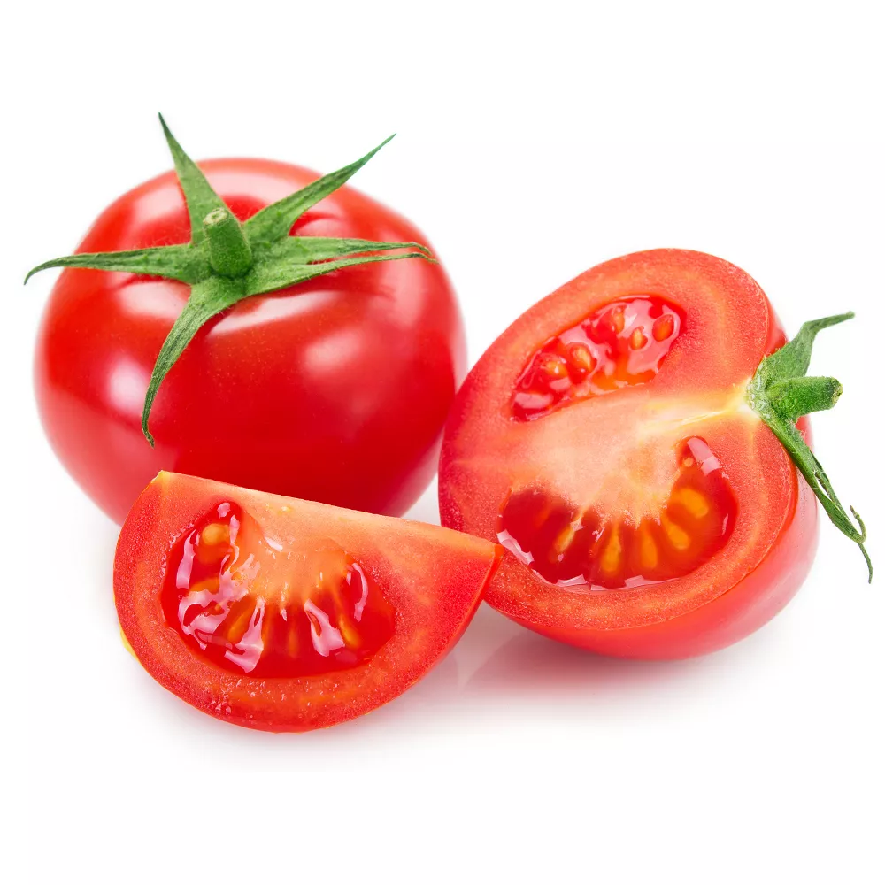
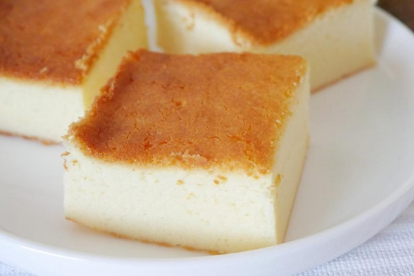

<W tabelach znajdują się poszczególne obiekty>
|  |
| Obiekt: Mrożon Typ: Dobry, Bohater Numer: 67 Karzdy kto go spodka powinien zachować ostrożność(jak z karzdym obiektem) Strzela lodem i śniegiem z rąk, potrzbuje stałego dostpu do mody, gdyż osłabnie. Ratuje ludzi i zwierzęta z roąk "Ognia" bardzo niebezpiecznego Bytu. |
|  |
| Obiekt: Pomidorki Typ: Zły, Wróg Numer: 69 Karzdy kto go spodka powinien natychmiast uciekać. Używa soku pomidorowego do ubrudzenia Cię, dlatego noś ubrania inne niż białe Jest podwładnym stwórcy "Ptoszka", wykonuje jego zadania. |
|  |
| Obiekt: Sernik Typ: Bojaźny, Srnik-Sernikowy Numer: 01 Karzdy kto go spodka powinien mu dawać komplemęty, by był smaczny. Jeśli go wystraszysz to zacznie strzelać rodzynkami(mogą wywołać wymioty) Można z nim się zaprzyjaźnić, ale na krótko , z zasad nażyconych przez "Ptoszka" Karzdy sernika zje, chodźby miał cię uratowac MROŻON i tak zjesz sernika :( |